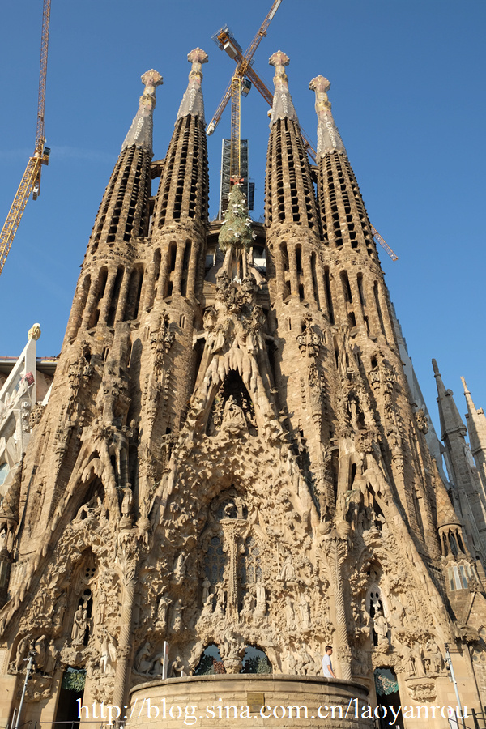

欧游札记之火舞西班牙（Day1广州—巴塞罗那）

Day1广州—巴塞罗那
火红激情的弗拉明戈、热血澎湃的斗牛士之舞、怪诞不经的建筑界奇才高迪、天马行空的超现实主义绘画大师毕加索，随便拎起哪一条都能毫不迟疑地将我们引向了美丽而又神秘的伊比利亚半岛之国——西班牙。
此行还是搭乘我们所熟悉的欧洲飞行配方—卡塔尔航空，尽管多花了一千几百大洋从广州白云机场直接出发，却省掉了去香港或澳门机场折腾的路费、伙食费和来回时间，算下来成本也差不多了，完全符合我们超前谋划、精打细算、高性价比的穷游原则。经历了十七八个小时的长途飞行和中途多哈转机以后，下午时分我们云淡风轻地抵达了巴塞罗那机场，可能人品较好，我们出其顺利地在不到三十分钟时间内便轻车熟路地通过了边检及海关拿到了托运行李，相比英国、法国、德国来说西班牙入境的效率确实是高！或许也是沾了些中华泱泱大国的西班牙旅游大军的光吧！
这还不算，之前早有联系的巴塞罗那老友盛情难却，亲自驾车到机场接我们，连打的去公寓的钱都省了。简直不要太顺风顺水了！一路上有一搭没一搭地和老友聊着他在巴塞的近况，一路沿着略显老旧的机场高速朝巴塞市中心开去，随着四周老建筑越来越密集、马路越来越狭小，我们知道已接近此行的第一个落脚点了，这间我们从BOOKING上千挑万选出来的公寓尽管面积不大装修一般，但胜在厨具及其他住家设施一应俱全，且位于老城区核心区域可步行直达周边几个主要的景点，如圣家堂、奎尔公园、巴特略之家等等，不枉我们提前几个月做了那么多的比选工作。
简单安顿下来，老友便领着我们去周边几个超市认了下路，确保未来几天我们一日三餐能自己动手丰衣足食。待我们大致对周边环境有所了解后，机智如我的老友google地图点评找了一家当地特色餐厅聊表地主之谊，席间推杯换筹，把“肉”言欢，尽兴而归，毋庸多表。